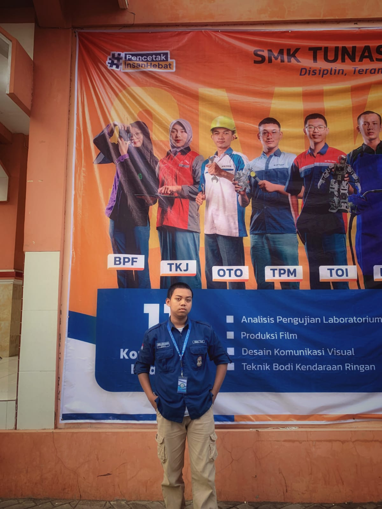

KAMARUL ARIFIN MUZAFFAR

Kamarul Arifin Muzaffar
Nama saya Kamarul Arifin Muzaffar, biasa dipanggil Arif. Saya lahir di Pati pada tanggal 20 Desember 2008, dan saat ini berusia 16 tahun. Saat ini saya bersekolah di SMK Tunas Harapan Pati jurusan TJKT. Saya tinggal di Margoyoso. Dalam keseharian, saya memiliki hobi yang mendukung pembelajaran, salah satunya adalah ngoding. Saya juga memiliki minat besar di bidang software division, sehingga saya semangat terus belajar dan mengasah kemampuan di bidang tersebut.
Sosmed Saya
Channel YouTube Saya
Berikut adalah beberapa video terbaru saya di YouTube. Jangan lupa tonton, like, dan subscribe untuk mendukung channel saya!
Clash of Champions (COC) Season 2 - EPS. 15 | BRAIN FLIP!
Detik-detik menuju Grand Final 🤩 Waktunya bantai membantai nih. Siapa yang akan bisa bertahan?
Tonton di YouTubeAKHIRNYA KE JEPANG LAGI & REUNI BARENG WASEDABOYS 🥹
Ini ya rasanya kangen sama sahabat WKWK. Akhirnya, kemarin waktu aku ke Jepang, aku sempetin ketemu sama WASEDA BOYS...
Tonton di YouTubePodcast Keluarga Artis Ep.15 - Pertemuan 3 Orang Jenius
Pertemuan 3 orang jenius 🤯 Semoga setelah menonton video ini kalian jadi jago berhitung.
Tonton di YouTube